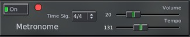

This is a simple metronome. The parameters are not stored on presets but are saved as preferences and are remembered each time you start the program.
The Tempo of the metronome is internal. If you want to sync to Jack Transport use the Looper metronome.
Volume - Adjust the Metronome volume.
Tempo - Adjust the Tempo bpm.
Time Sig. - Adjust the Time Signature/Measure.
S - Sound Type
"N" Normal mode: a higher pitch will play at the beginning of each measure.
"H" mode: all the ticks will be high.
"L" mode: all the ticks will be low.
